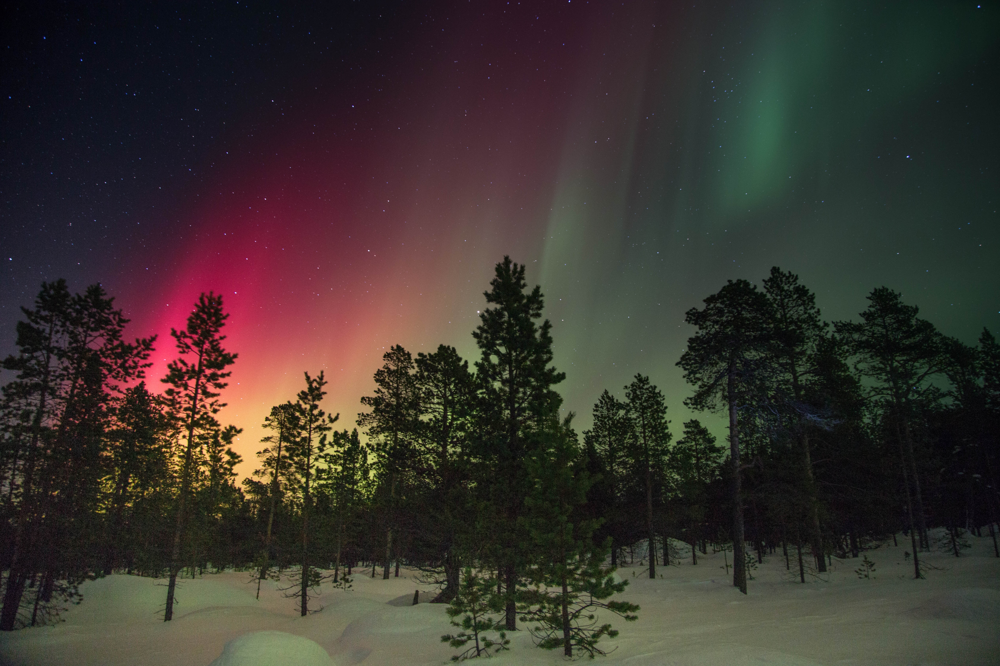

Polarlichter

Polarlichter sind, wie der Name schon sagt, Leuchterscheinungen die in Polargebieten auftreten, wissenschaftlich bezeichnet man sie als Aurora borealis, für die nördlichen Polarlichter, und als Aurora australis, für die südlichen Polarlichter.
Entstehung
Polarlichter enstehen wenn geladene Teilchen, meist Elektronen, selten Protonen, die durch Sonnenwinde zur Erde getragen werden. Diese Teilchen treffen in der oberen Atmospähre auf Sauerstoff- und Stickstoffatome, durch den Kontakt ionisieren die Atome, kurz darauf folgt die Rekombination (die Ionisierung wird rückgängig gemacht), dabei wird elektromagnetische Strahlung freigesetzt und es ensteht Licht.
Auftreten
Polarlichter treten natürlicherweise meist nur in Polargebieten auf und sind nur bei starken und häufigen Sonnenwinden auch in mittleren Breiten wie Europa zu sehen. Im Jahr treten, je nach dem Aktivitätzyklus der Sonne, bis zu 20 Polarlichter auf.
Farben der Polarlichter
Meist tritt das Polarlicht in grüner Farbe auf, das wird durch ionisierte Sauerstoffatome verursacht, jedoch können dadurch auch rote Polarlichter entstehen, aber nur in der oberen Atmosphäre, sie treten meist nur in den mittleren Breiten auf. Violette bis blaue Polarlichter enstehen durch ionisierte Stickstoffatome, da diese aber schwer zu ioniesieren sind, treten sie seltener auf und auch nur bei starker Störung der Magnetospähre.
